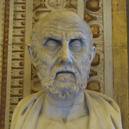
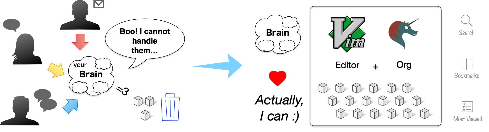

A brief introduction to vim-orgmode
Table of Contents
1 Introduction
1.1 Who am I? attach

| Name | Takaaki ISHIKAWA |
| @takaxp | |
| Job | Researcher, Lecturer, Software engineer |
| An expert of ISO/IEC JTC 1/SC 29 | |
| Lang. | ﾁｮｯﾄﾀﾞｹ C, C++, and Perl |
1.2 Personally, attach
I love Pasta without Spaghetti source code.
2 vim-orgmode
2.1 What is vim-orgmode?
A Vim plugin of…
┌──────────────────────────────────────────────┐ │ Text outlining and task management for Vim │ │ based on Emacs' Org-Mode │ └──────────────────────────────────────────────┘
What for?
- Not limited to writing source code
- Organizing your tasks and actions (e.g. GTD)
- Writing meeting minutes or technical reports
- Capturing and recording everything as plain text
2.2 Capabilities attach
- See the official website: https://github.com/jceb/vim-orgmode
[ ]Syntax highlighting[ ]Markup (not Markdown)[ ]Cycle visibility of headings (folding)[ ]Edit the structure of the document:
- add, move, promote, denote headings and more
- add, move, promote, denote headings and more
[ ]Hyperlinks within vim-orgmode and outside (files, webpages, etc.)[ ]TODO list management[ ]Generating well-structured document[-]Export to other formats (via Emacs’ Org-Mode)
[X]Literate programming (Jupyter notebook? NO)[ ]Reproducible research
2.3 Where can we see Org?
┌────────────────────────────────┐ │ README on GitHub │ └────────────────────────────────┘
Markdown?
Absolutely NO!
e.g.
2.4 Supporting Org in other editors
- Sublime text: orgmode for Sublime Text 2 & 3
- VS Code: Emacs Org Mode for Visual Studio Code
- https://github.com/vscode-org-mode/vscode-org-mode
- In Progress, contributions are welcome
- In Progress, contributions are welcome
- https://github.com/vscode-org-mode/vscode-org-mode
- Atom: Atom grammar for org-mode syntax
- GNU Emacs: Org Mode (the original)
3 Org Mode
3.1 What is this? attach
IMO, Org Mode is…
┌────────────────────────┐ ┌────────────────────────┐
│ the second brain │ or │ Exocortex │
└────────────────────────┘ └────────────────────────┘
An extension to your brain
3.2 Change your situation attach

3.3 What is your requirements to text editor?
- Visual feedback (e.g. syntax highlighting)
- Efficiency
- you don't like duplicated works
- you don't like duplicated works
- Snippet or code completion
- since we have limited memory in brain
etc…
- since we have limited memory in brain
3.4 But the ideal goal is…
┌──────────────────────────────────────────────┐ │ Just imagine, then get the results. │ └──────────────────────────────────────────────┘
Question:
Why are you typing your keyboard now?
3.5 Do not work too much secret
*Just imagine, then get the results!*
┌────────────────┐ ┌────────────────┐
│ Imagine │ → │ Results! │
└────────────────┘ └────────────────┘
---------------------------------------------
Need a report in Microsoft Word → Export it from an org file
I cannot remember but I know... → Search and find it from org files
When I have to go to Vimconf → Get a reminder from Org
Security? → just encrypt data
4 Problems
4.1 Current status of development
vim-orgmode doesn't support full functionalities of Org Mode in Emacs.
Table 1: basic statistics based on GitHub or git repository Org Mode Vim-orgmode vscode-org-mode Starting date 2003-mm-dd Contributors 100 (approx.) 34 7 Commits 21,579 997 203
4.2 Now we are in the middle of the way
- Human being needs your contributions to expand vim-orgmode ;-)
m9(^Д^) you!
5 Conclusion
┌───────────────────────────────────┐ │ Jump in Org Mode, today! │ └───────────────────────────────────┘
visit https://orgmode.org
and
vim-orgmode (GitHub)
Thanks to:
- Org Mode
- org-tree-slide.el (as presentation module)
This presentation was delivered by GNU Emacs and Org Mode
- Sorry, not using Vim…
- but near future, vim-orgmode may achieve this!